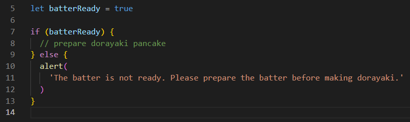
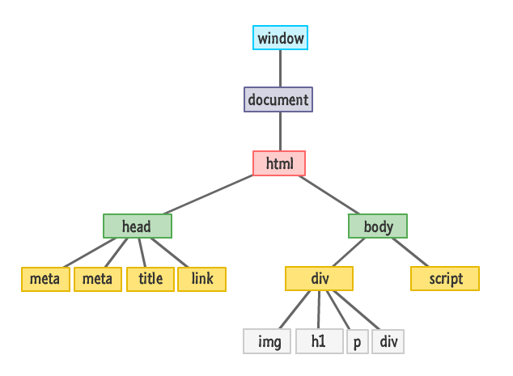
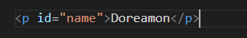
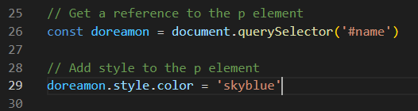
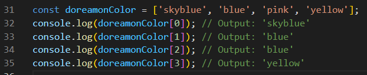
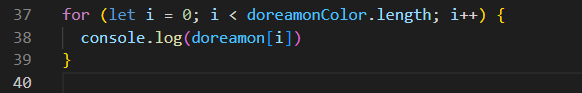
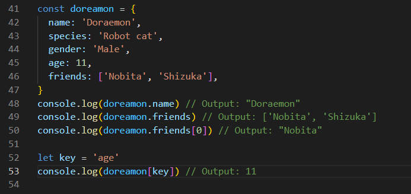
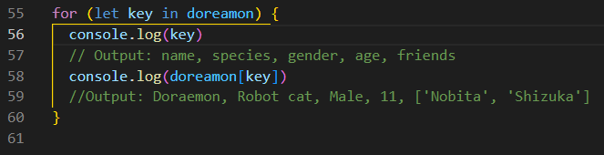

Analogy
JavaScript can be compared to the control buttons and joystick in a claw machine, which allow players to interact with the machine and manipulate the claw. In the same way, JavaScript allows web developers to add interactivity and dynamic behavior to HTML and CSS.
HTML can be likened to the structure and
contents inside the claw machine, such as the box and dolls.
It provides the basic structure and content of a web page.
CSS can be compared to the decorations and appearance of the
dolls and box inside the claw machine. It adds styling and
visual design to HTML elements, making them more visually
appealing and engaging.
Overall, the relationship between JavaScript, HTML, and CSS can be seen as analogous to the relationship between the control buttons, machine contents, and machine decorations in a claw machine, all working together to create a fun and interactive experience.

Control Flow & Loops
Control Flow
When making dorayaki, we need to complete each step in a certain order, which is the control flow. For example, we need to prepare the batter first, heat the flat pan, then fry each dorayaki pancake one by one, and finally add red bean paste and sandwich them together.

In JavaScript, we can use conditional statements (if-else statements) and Switch Statements to control the execution flow of the code. For example, in the process of making dorayaki, if the batter is not ready, we need to pause and prepare the batter. In JavaScript, we can use the alert() function to output a message to remind us to pause and prepare the batter.
Loops
In the process of making dorayaki, we need to repeat some identical operations,
such as frying each dorayaki pancake one by one or sandwiching red bean paste one by one. This is the loop.
In JavaScript, we can use for loops to repeatedly execute the same block of code. For example,
in the process of making dorayaki, we can use a for loop to fry each dorayaki pancake one by one.
The DOM
The DOM is a tree-like structure made up of all the elements that exist in HTML document.
The Document Object Module (DOM) is the single most important piece of functionality you have for working with your HTML documents. It provides the missing link that ties HTML and CSS with JavaScript. It also provides access one level up to document and window objects.
An example of how might we interact with DOM.
HTML:
We can use JavaScript to interact with this p element. I am going to change the color of "Doreamon".
JavaScript:
Now, when the page loads, "Doreamon" will display in skyblue like "Doreamon".
Accessing data from arrays and objects
Accessing data from an array
Arrays are ordered collections of values that are indexed by integers, starting at 0. To access the data stored in an array, we can use square brackets notation, passing the index of the value we want to retrieve. For example:
We can also use loop constructs, such as the for loop, to iterate over the values stored in an array:
Accessing date from an object
Objects are collections of key-value pairs. The values in an object can be of any data type, including arrays and other objects. To access the data stored in an object, we can use dot notation or square brackets notation, passing the key of the value you want to retrieve. For example:
We can also use the for … in loop to iterate over the properties of an object:
In summary, the main difference between accessing data from an array and an object is the way we access that data. Arrays use integer indexes to access values, while objects use keys to access values. Additionally, arrays are ordered collections of values, while objects are unordered collections of key-value pairs.
Functions
Functions are the basic building block of JavaScript. Functions allow us to encapsulate a block of code and reuse it multiple times. Functions make JavaScript code more readable, organized, reusable, and maintainable.
The reasons of why functions are helpful:
- Organize your code: By breaking your code into smaller functions, you can make your code more modular and easier to understand. Each function can have a clear and specific purpose, making it easier to read and maintain.
- Reuse code: Functions can be called multiple times from different parts of your code, making it possible to reuse the same code without having to rewrite it.
- Encapsulate functionality: Functions can be used to encapsulate complex logic or algorithms, making it easier to manage and modify the code over time.
- Reduce code duplication: Functions can be used to encapsulate common code patterns and reduce code duplication. This can help to keep your code more concise and easier to maintain.
- Pass and return data: Functions can take in input parameters and return output values. This makes it possible to create dynamic and flexible code that can handle different inputs and generate different outputs based on those inputs.
Overall, functions are a powerful tool in JavaScript and are essential for creating complex and sophisticated applications. They allow you to write modular, reusable, and easy-to-understand code that can be maintained and extended over time.